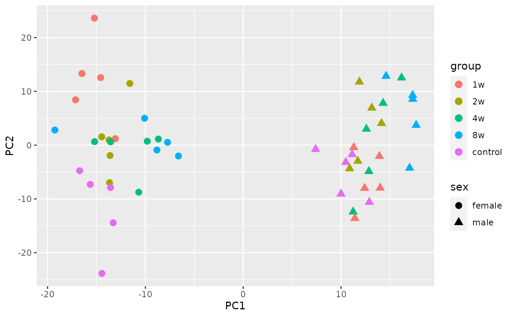

Tutorial for MotrpacRatTraining6moData R package
Source:vignettes/MotrpacRatTraining6moData.Rmd
MotrpacRatTraining6moData.RmdIntroduction
This vignette is under construction. If something is unclear or obviously missing, please submit an issue here.
About this package
This package provides convenient access to the processed data and downstream analysis results presented in the main paper for the first large-scale multi-omic multi-tissue endurance exercise training study conducted in young adult rats by the Molecular Transducers of Physical Activity Consortium (MoTrPAC). Find the preprint on bioRxiv. We highly recommend skimming the preprint before using this package as it provides important context and much greater detail than we can provide here.
While the data in this package can be used by themselves, as demonstrated in this vignette, the MotrpacRatTraining6mo R package relies heavily on this package and provides many functions to help retrieve and explore the data. See the MotrpacRatTraining6mo vignette for examples.
About MoTrPAC
MoTrPAC is a national research consortium designed to discover and perform preliminary characterization of the range of molecular transducers (the “molecular map”) that underlie the effects of physical activity in humans. The program’s goal is to study the molecular changes that occur during and after exercise and ultimately to advance the understanding of how physical activity improves and preserves health. The six-year program is the largest targeted NIH investment of funds into the mechanisms of how physical activity improves health and prevents disease. See motrpac.org and motrpac-data.org for more details.
Installation
Install this package with devtools:
if (!require("devtools", quietly = TRUE)){
install.packages("devtools")
}
devtools::install_github("MoTrPAC/MotrpacRatTraining6moData")The output for a successful installation looks something like this.
Note that the *** moving datasets to lazyload DB step takes
the longest (~5 minutes):
Downloading GitHub repo MoTrPAC/MotrpacRatTraining6moData@HEAD
✓ checking for file ‘.../MoTrPAC-MotrpacRatTraining6moData-1c6478a/DESCRIPTION’ ...
─ preparing ‘MotrpacRatTraining6moData’:
✓ checking DESCRIPTION meta-information
─ checking for LF line-endings in source and make files and shell scripts
─ checking for empty or unneeded directories
─ building ‘MotrpacRatTraining6moData_1.3.2.tar.gz’ (1.3s)
* installing *source* package ‘MotrpacRatTraining6moData’ ...
** using staged installation
** R
** data
*** moving datasets to lazyload DB
** inst
** byte-compile and prepare package for lazy loading
** help
*** installing help indices
** building package indices
** testing if installed package can be loaded from temporary location
** testing if installed package can be loaded from final location
** testing if installed package keeps a record of temporary installation path
* DONE (MotrpacRatTraining6moData)Troubleshooting
If you get this error:
Downloading GitHub repo MoTrPAC/MotrpacRatTraining6moData@HEAD
Error in utils::download.file(url, path, method = method, quiet = quiet, :
download from 'https://api.github.com/repos/MoTrPAC/MotrpacRatTraining6moData/tarball/HEAD' failed..try extending the timeout:
options(timeout=1e5)
devtools::install_github("MoTrPAC/MotrpacRatTraining6moData")If you get this error after extending the timeout:
Downloading GitHub repo MoTrPAC/MotrpacRatTraining6moData@HEAD
Error in utils::download.file(url, path, method = method, quiet = quiet, :
download from 'https://api.github.com/repos/MoTrPAC/MotrpacRatTraining6moData/tarball/HEAD' failed
Error in `action()`:
! `class` is absent but must be supplied.
Run `rlang::last_error()` to see where the error occurred.…this seems to be an intermittent issue seen only on Mac, not Linux or Windows. This was resolved by installing the newest version of R.
Last resort
If you can’t get
devtools::install_github("MoTrPAC/MotrpacRatTraining6moData")
to work, try this:
Go to https://api.github.com/repos/MoTrPAC/MotrpacRatTraining6moData/tarball/HEAD, which will automatically start downloading this repository in a tarball
-
Install the package from source:
install.packages("~/Downloads/MoTrPAC-MotrpacRatTraining6moData-0729e2e.tar.gz", repos = NULL, type = "source") library(MotrpacRatTraining6moData)
Once we install this package, we can load the library.
library(MotrpacRatTraining6moData)
library(ggplot2) # for plots in this tutorial Tip: To learn more about any data object, use
? to retrieve the documentation, e.g.,
?METAB_FEATURE_ID_MAP. Note that
MotrpacRatTraining6moData must be installed and loaded with
library() for this to work.
Study design
Details of the experimental design can be found in the supplementary methods of the bioRxiv preprint. Briefly, 6-month-old young adult rats were subjected to progressive endurance exercise training for 1, 2, 4, or 8 weeks, with tissues collected 48 hours after the last training bout. Sex-matched sedentary, untrained rats were used as controls. Whole blood, plasma, and 18 solid tissues were analyzed using genomics, proteomics, metabolomics, and protein immunoassay technologies, with most assays performed in a subset of these tissues. Depending on the assay, between 3 and 6 replicates per sex per time point were analyzed.
Tissue and assay abbreviations
It is important to be aware of the tissue and assay abbreviations
because they are used to name many data objects. The vectors of
abbreviations are also available in TISSUE_ABBREV and
ASSAY_ABBREV.
Tissues
-
ADRNL: adrenal gland
-
BAT: brown adipose tissue
-
BLOOD: whole blood
-
COLON: colon
-
CORTEX: cerebral cortex
-
HEART: heart
-
HIPPOC: hippocampus
-
HYPOTH: hypothalamus
-
KIDNEY: kidney
-
LIVER: liver
-
LUNG: lung
-
OVARY: ovaries (female gonads)
- PLASMA: plasma from blood
-
SKM-GN: gastrocnemius (leg skeletal muscle)
- SKM-VL: vastus lateralis (leg skeletal muscle)
-
SMLINT: small intestine
-
SPLEEN: spleen
-
TESTES: testes (male gonads)
-
VENACV: vena cava
- WAT-SC: subcutaneous white adipose tissue
Assays/omes
-
ACETYL: acetylproteomics; protein site
acetylation
-
ATAC: chromatin accessibility, ATAC-seq data
-
IMMUNO: multiplexed immunoassays (cytokines and
hormones)
-
METAB: metabolomics and lipidomics
-
METHYL: DNA methylation, RRBS data
-
PHOSPHO: phosphoproteomics; protein site
phosphorylation
-
PROT: global proteomics; protein abundance
-
TRNSCRPT: transcriptomics, RNA-Seq data
- UBIQ: ubiquitylome; protein site ubiquitination
Summary of data
Here is a brief summary of the kinds of data included in this package:
- Assay, tissue, sex, and training group abbreviations, codes, colors, and order used in plots
- Phenotypic data,
PHENO
- Mapping between various feature identifiers, i.e.,
FEATURE_TO_GENE,RAT_TO_HUMAN_GENE
- Ome-specific feature annotation, i.e.,
METAB_FEATURE_ID_MAP,METHYL_FEATURE_ANNOT(GCP only),ATAC_FEATURE_ANNOT(GCP only) - Ome-specific sample-level metadata, i.e.,
TRNSCRPT_META,ATAC_META,METHYL_META,IMMUNO_META,PHOSPHO_META,PROT_META,ACETYL_META,UBIQ_META
- Raw counts for RNA-Seq (TRNSCRPT), ATAC-Seq (ATAC), and RRBS
(METHYL) data, e.g.,
TRNSCRPT_LIVER_RAW_COUNTS. Note that epigenetic data (ATAC and METHYL) must be downloaded from Google Cloud Storage. See more details here.
- Normalized sample-level data, e.g.,
TRNSCRPT_SKMGN_NORM_DATA
- Differential analysis results, e.g.,
HEART_PROT_DA - Sample outliers excluded from differential analysis,
OUTLIERS
- Table of training-regulated features at 5% FDR,
TRAINING_REGULATED_FEATURES
- Bayesian graphical analysis inputs and results
- Pathway enrichment of main graphical clusters,
GRAPH_PW_ENRICH
A list of all the available data objects and a brief description are available here.
Principal component analysis
Here we show how to combine the normalized RNA-seq data from the gastrocnemius (leg skeletal muscle) with the phenotypic data to perform principal component analysis (PCA). We also take advantage of the training group colors.
# Load data
# While this is not necessary, we want to make it clear what objects are available in the package.
# Note you can use data directly without loading with `data()`, e.g., `head(PHENO)`
data(PHENO) # phenotypic data
data(TRNSCRPT_SKMGN_NORM_DATA) # normalized gastrocnemius RNA-seq data
data(GROUP_COLORS) # hex colors for training groups
# The first four columns in the sample-level data specify row meta-data; next columns are samples
# Note the "feature" column is only non-NA for training-regulated features at 5% FDR
TRNSCRPT_SKMGN_NORM_DATA[1:3,1:6]
#> feature feature_ID tissue assay 90560015512 90581015512
#> 1 <NA> ENSRNOG00000000008 SKM-GN TRNSCRPT 0.04044 -0.09760
#> 2 <NA> ENSRNOG00000000012 SKM-GN TRNSCRPT 2.61487 2.78841
#> 3 <NA> ENSRNOG00000000021 SKM-GN TRNSCRPT 2.17049 1.70091
sample_ids = colnames(TRNSCRPT_SKMGN_NORM_DATA)[-c(1:4)]
# Perform PCA
skmgn_pca = stats::prcomp(t(TRNSCRPT_SKMGN_NORM_DATA[,sample_ids]))
# Make a data frame with some phenotypic data and the first 3 PCs
df = data.frame(
group = PHENO[sample_ids,"group"],
sex = PHENO[sample_ids,"sex"],
skmgn_pca$x[,1:3] # take the first principal components
)
# Plot the first two PCs
ggplot(df, aes(x=PC1, y=PC2, colour=group, shape=sex)) +
geom_point(size=3) 
# Use GROUP_COLORS and make it prettier
ggplot(df, aes(x=PC1, y=PC2, fill=group, shape=sex)) +
geom_point(size=3, colour="black") +
scale_fill_manual(values=GROUP_COLORS) +
scale_shape_manual(values=c(male=21, female=24)) +
theme_bw() +
guides(fill=guide_legend(override.aes = list(shape=21))) +
labs(title="PCA of Gastrocnemius RNA-seq data") +
theme(plot.title = element_text(hjust=0.5))Compare RNA and protein data
Here we take the heart RNA-seq and global proteomics data, match their sample IDs, and map the features to gene IDs.
Data processing
First, load the normalized data from each ome.
rnaseq_d = TRNSCRPT_HEART_NORM_DATA
prot_d = PROT_HEART_NORM_DATABy default, the column names of most sample-level data are vial
labels, which are sample-specific identifiers. Different samples from
the sample animal were processed for different assays. Therefore, in
order to map between samples from the same animal across assays, we need
to map sample IDs to participant IDs (PIDs) or biospecimen IDs (BIDs).
Here, we map vial labels (sample IDs) to BIDs because BIDs are
conveniently a substring of the vial labels. PHENO can also
be used to map between vial labels (viallabel), PID
(pid), and BID (bid).
## Match sample ids
#' A helper function for getting a named vector that maps biospecimen ids to sample ids
#' The biospecimen id of each sample is the substring of the sample id.
map_sample_to_bid = function(x){
names(x) = substring(first=1, last=5, x)
x
}
rnaseq_bid = map_sample_to_bid(colnames(rnaseq_d)[-c(1:4)])
prot_bid = map_sample_to_bid(colnames(prot_d)[-c(1:4)])
shared_bids = intersect(names(rnaseq_bid),names(prot_bid))Now we used the FEATURE_TO_GENE map to map RNA-seq and
proteomics feature IDs to gene symbols. FEATURE_TO_GENE is
very large (>4M rows), so we start by subsetting it to the features
in the current analysis.
dim(FEATURE_TO_GENE)
#> [1] 4044034 9
f2g = FEATURE_TO_GENE[
FEATURE_TO_GENE$feature_ID %in% union(rnaseq_d$feature_ID,prot_d$feature_ID),
]
dim(f2g)
#> [1] 24591 9Use the sample-to-BID mapping and the feature-to-gene mapping to subset the RNA-seq and proteomics data to overlapping BIDs and genes. For cases where multiple feature IDs map to the same gene, take the average value per BID.
# Get new RNA-seq and proteomics data frames
# here we compute the gene-wise average profiles, while limiting the
# data to the shared biospecimen ids
rnaseq_x = merge(rnaseq_d, f2g[,c("feature_ID","gene_symbol")], by="feature_ID")
rnaseq_x = stats::aggregate(
rnaseq_x[,rnaseq_bid[shared_bids]], # get the shared samples
by = list(rnaseq_x$gene_symbol), mean, na.rm=T)
# Same for proteomics
prot_x = merge(prot_d,f2g[,c("feature_ID","gene_symbol")],by="feature_ID")
prot_x = stats::aggregate(
prot_x[,prot_bid[shared_bids]], # get the shared samples
by = list(prot_x$gene_symbol),mean,na.rm=T)
# remove proteomics genes with missing values
prot_x = prot_x[!apply(is.na(prot_x),1,any),]
# Subset the data to the shared genes
rownames(rnaseq_x) = rnaseq_x[,1]
rnaseq_x = rnaseq_x[,-1]
rownames(prot_x) = prot_x[,1]
prot_x = prot_x[,-1]
shared_genes = intersect(rownames(rnaseq_x),rownames(prot_x))
prot_x = prot_x[shared_genes,]
rnaseq_x = rnaseq_x[shared_genes,]Differential abundance analysis
Now we can perform a simple differential analysis between the males
trained for 8 weeks and the sedentary control males to identify genes
that are regulated by training. We do this separately for RNA-seq and
proteomics data. We use t-tests here for simplicity, but a more
appropriate way to compute differential abundance is to use tools like
limma and DESeq2. Fortunately, these more
robust results are also available in this package!
# Perform simple t-tests
ttest_wrapper <- function(x, groups, group1, group2){
x1 = x[groups==group1]
x2 = x[groups==group2]
tres = t.test(x1,x2)
return(c(
"logFC" = unname(tres$estimate[1]-tres$estimate[2]),
"tscore" = unname(tres$statistic),
"p_value" = tres$p.value
))
}
# Compute t-tests for week 8 in males
training_groups = paste(
PHENO[colnames(rnaseq_x),"sex"],
PHENO[colnames(rnaseq_x),"group"], sep=","
)
male_8w_rnaseq_ttests = apply(rnaseq_x,
1,
ttest_wrapper,
groups=training_groups,
group1="male,8w",
group2="male,control")
male_8w_prot_ttests = apply(prot_x,
1,
ttest_wrapper,
groups=training_groups,
group1="male,8w",
group2="male,control")
# As we observed in the paper, the differential analysis results are mildly correlated:
cor(male_8w_rnaseq_ttests["tscore",], male_8w_prot_ttests["tscore",])
#> [1] 0.1920838Compare to published results
Now we compare the results from the simple t-test above to the differential analysis results from DESeq2 (for RNA-seq) and limma (for proteomics).
rnaseq_DA = TRNSCRPT_HEART_DA
prot_DA = PROT_HEART_DA
# subset the results to 8w, males
rnaseq_DA = rnaseq_DA[rnaseq_DA$sex == "male" & rnaseq_DA$comparison_group=="8w",]
prot_DA = prot_DA[prot_DA$sex == "male" & prot_DA$comparison_group=="8w",]
# Add gene symbols
rnaseq_DA = merge(rnaseq_DA, f2g[,c("feature_ID","gene_symbol")], by="feature_ID")
prot_DA = merge(prot_DA, f2g[,c("feature_ID","gene_symbol")], by="feature_ID")
# Get the best t-test results per gene
get_best_zscore = function(zs){
return(zs[abs(zs)==max(abs(zs),na.rm = T)][1])
}
rnaseq_t = tapply(rnaseq_DA$zscore,
rnaseq_DA$gene_symbol,
get_best_zscore)
prot_t = tapply(prot_DA$tscore,
prot_DA$gene_symbol,
get_best_zscore)
# Again, we see mild but non-zero correlation
cor(rnaseq_t[shared_genes],prot_t[shared_genes])
#> [1] 0.2126466
# Here we show an almost perfect correlation between the pre-computed
# RNA-seq DESeq2 results and the simple t-tests performed above
plot(rnaseq_t[shared_genes],
male_8w_rnaseq_ttests["tscore",shared_genes],
main = "Transcriptomics DA, males at week 8",
xlab = "DESeq2 t-score",ylab = "Simple t-test statistic",
pch=20,col="gray");abline(0,1,lty=2)Getting help
For questions, bug reporting, and data requests for this package, please submit a new issue and include as many details as possible.
If the concern is related to functions provided in the MotrpacRatTraining6mo package, please submit an issue here instead.
Acknowledgements
MoTrPAC is supported by the National Institutes of Health (NIH) Common Fund through cooperative agreements managed by the National Institute of Diabetes and Digestive and Kidney Diseases (NIDDK), National Institute of Arthritis and Musculoskeletal Diseases (NIAMS), and National Institute on Aging (NIA).
Session Info
sessionInfo()
#> R version 4.2.2 (2022-10-31)
#> Platform: x86_64-pc-linux-gnu (64-bit)
#> Running under: Ubuntu 22.04.1 LTS
#>
#> Matrix products: default
#> BLAS: /usr/lib/x86_64-linux-gnu/openblas-pthread/libblas.so.3
#> LAPACK: /usr/lib/x86_64-linux-gnu/openblas-pthread/libopenblasp-r0.3.20.so
#>
#> locale:
#> [1] LC_CTYPE=C.UTF-8 LC_NUMERIC=C LC_TIME=C.UTF-8
#> [4] LC_COLLATE=C.UTF-8 LC_MONETARY=C.UTF-8 LC_MESSAGES=C.UTF-8
#> [7] LC_PAPER=C.UTF-8 LC_NAME=C LC_ADDRESS=C
#> [10] LC_TELEPHONE=C LC_MEASUREMENT=C.UTF-8 LC_IDENTIFICATION=C
#>
#> attached base packages:
#> [1] stats graphics grDevices utils datasets methods base
#>
#> other attached packages:
#> [1] ggplot2_3.4.0 MotrpacRatTraining6moData_1.7.0
#>
#> loaded via a namespace (and not attached):
#> [1] highr_0.10 bslib_0.4.2 compiler_4.2.2 pillar_1.8.1
#> [5] jquerylib_0.1.4 tools_4.2.2 digest_0.6.31 jsonlite_1.8.4
#> [9] evaluate_0.19 memoise_2.0.1 lifecycle_1.0.3 tibble_3.1.8
#> [13] gtable_0.3.1 pkgconfig_2.0.3 rlang_1.0.6 DBI_1.1.3
#> [17] cli_3.5.0 yaml_2.3.6 pkgdown_2.0.7 xfun_0.36
#> [21] fastmap_1.1.0 withr_2.5.0 dplyr_1.0.10 stringr_1.5.0
#> [25] knitr_1.41 generics_0.1.3 desc_1.4.2 fs_1.5.2
#> [29] vctrs_0.5.1 sass_0.4.4 systemfonts_1.0.4 tidyselect_1.2.0
#> [33] rprojroot_2.0.3 grid_4.2.2 glue_1.6.2 R6_2.5.1
#> [37] textshaping_0.3.6 fansi_1.0.3 rmarkdown_2.19 farver_2.1.1
#> [41] purrr_1.0.0 magrittr_2.0.3 scales_1.2.1 htmltools_0.5.4
#> [45] assertthat_0.2.1 colorspace_2.0-3 labeling_0.4.2 ragg_1.2.4
#> [49] utf8_1.2.2 stringi_1.7.8 munsell_0.5.0 cachem_1.0.6